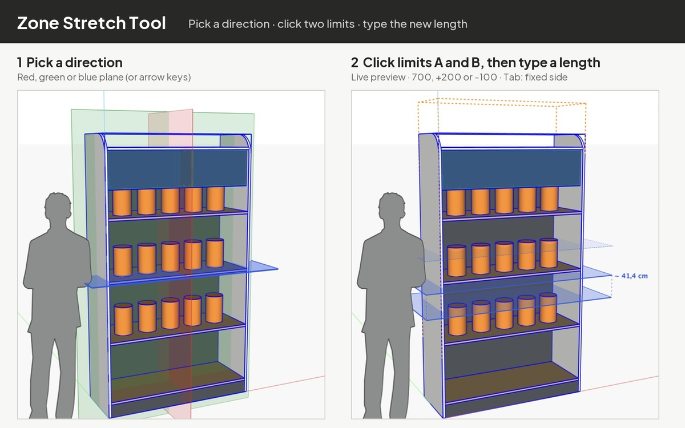

Zone Stretch
Stretch or shrink only the part of an object between two limits. Everything outside keeps its exact shape.
Memanjangkan atau memendekkan hanya bagian objek di antara dua batas: bagian di luar zona tetap utuh.
1. Installation1. Instalasi
- Download
ad_zone_stretch-1.4.0.rbz. - SketchUp: Extensions › Extension Manager › Install Extension… and choose the file.
- Restart SketchUp. The Zone Stretch toolbar appears (otherwise View › Toolbars).
- Unduh
ad_zone_stretch-1.4.0.rbz. - Di SketchUp: Extensions › Extension Manager › Install Extension… lalu pilih file tersebut.
- Tutup lalu buka lagi SketchUp. Toolbar Zone Stretch muncul (jika tidak: View › Toolbars).
2. Stretch step by step2. Langkah demi langkah

- Select one group or component: the object you want to change.
- Start Extensions › Zone Stretch › Zone Stretch Tool (or the toolbar button, or right-click).
- Choose the direction. Red, green and blue planes appear across the object. Hover one to highlight it and click: red = width, green = depth, blue = height. The arrow keys work too: → red, ← green, ↑ blue.
- Place limit A. The plane follows the cursor and snaps to points, edges and faces like the Move tool. Click where the zone should start.
- Place limit B. Click a second point, or type the exact distance from A and press Enter. The live distance is shown next to the planes and in the Measurements box.
- Set the new zone length: type it and press Enter, or move the mouse to preview and click. The tool closes when it is done.
- Pilih satu grup atau komponen: objek yang ingin diubah.
- Jalankan Extensions › Zone Stretch › Zone Stretch Tool (atau tombol toolbar, atau klik kanan).
- Pilih arah. Bidang merah, hijau dan biru muncul melintasi objek. Arahkan kursor untuk menyorot lalu klik: merah = lebar, hijau = kedalaman, biru = tinggi. Bisa juga dengan tombol panah: → merah, ← hijau, ↑ biru.
- Pasang batas A. Bidang mengikuti kursor dan snap ke titik, edge dan face seperti alat Move. Klik di awal zona.
- Pasang batas B. Klik titik kedua, atau ketik jarak tepat dari A lalu Enter. Jarak tampil di samping bidang dan di kotak Measurements.
- Tentukan panjang zona baru: ketik lalu Enter, atau gerakkan mouse untuk pratinjau lalu klik. Alat tertutup otomatis setelah selesai.
3. Three ways to type the length3. Tiga cara mengetik panjang
| You typeKetik | MeaningArti | Gap 180 becomesCelah 180 menjadi |
|---|---|---|
480 | New total length of the zonePanjang total zona yang baru | 480 |
+200 | Add to the gapTambah ke celah | 380 |
-100 | Shrink the gapKurangi celah | 80 |
Numbers use the model's units; you can also type a unit, e.g. 48cm or +2". If a shrink is larger than the gap (e.g. -200 on a 180 gap) you get a message and nothing changes.
Angka memakai satuan model; bisa juga dengan satuan, misalnya 48cm atau +2". Jika pengurangan lebih besar dari celah (misalnya -200 pada celah 180) muncul pesan dan tidak ada yang berubah.

4. Keys4. Tombol
| → ← ↑ | Direction red / green / blueArah merah / hijau / biru |
| Tab | Which side stays fixed: lower, upper or centreSisi yang tetap: bawah, atas atau tengah |
| Esc | Go back one stepMundur satu langkah |
| Ctrl/Cmd+Z | Undo the whole stretch in one stepBatalkan seluruh stretch dalam satu langkah |
5. What happens to the model5. Apa yang terjadi pada model
- Parts that cross the zone are stretched; parts beyond it only move; parts before it stay put, at any depth of nested groups and components, without exploding anything.
- Copies of the same component that change the same way keep sharing one definition; copies outside the object are never touched.
- Arcs, curves, smooth surfaces, materials and textures keep their shape outside the zone. Text, dimensions, guides, images and section planes move along.
- The limit planes are drawn on screen only. Nothing is added to the model.
- Locked objects are refused (right-click › Unlock first).
- Bagian yang melintasi zona ditarik; bagian di seberang zona hanya bergeser; bagian sebelum zona diam: pada grup/komponen bersarang sedalam apa pun, tanpa explode.
- Salinan komponen yang berubah sama tetap berbagi satu definisi; salinan di luar objek tidak disentuh.
- Busur, kurva, permukaan halus, material dan tekstur di luar zona tetap utuh. Teks, dimensi, guide, gambar dan section plane ikut bergeser.
- Bidang batas hanya digambar di layar: tidak ada objek yang ditambahkan ke model.
- Objek terkunci ditolak (klik kanan › Unlock dulu).
6. Limit objects (alternative)6. Objek batas (alternatif)
You can also select the object plus two flat, parallel objects or faces as limits and run Extensions › Zone Stretch › Zone Stretch with Limit Objects….
Bisa juga memilih objek ditambah dua objek/face datar yang sejajar sebagai batas, lalu Extensions › Zone Stretch › Zone Stretch with Limit Objects….
7. Uninstall
Extensions › Extension Manager › Zone Stretch › Uninstall, then restart SketchUp.
Extensions › Extension Manager › Zone Stretch › Uninstall, lalu tutup lalu buka lagi SketchUp.
Start here: for first-time usersMulai dari nol
Stuck installing or using this extension? This part explains the basics in plain words. If you are comfortable with SketchUp, you can skip it.
Kesulitan memasang atau memakai extension ini? Bagian ini menjelaskan dasar-dasarnya dengan bahasa sehari-hari. Kalau sudah terbiasa dengan SketchUp, bagian ini bisa dilewati.
What you are installingApa yang Anda pasang
An extension is a small add-on that gives SketchUp a new tool. It comes as one file ending in .rbz. You do not open or unzip that file yourself; SketchUp installs it for you. Zone Stretch is free.
Extension adalah program tambahan kecil yang menambah alat baru di SketchUp. Bentuknya satu file berakhiran .rbz. File itu tidak perlu dibuka atau diekstrak sendiri, karena SketchUp yang memasangnya. Zone Stretch gratis.
Install it, step by stepCara memasang, langkah demi langkah
- On the main page, press Download. The file usually lands in your Downloads folder.
- Open SketchUp. In the menu bar at the top, choose Extensions › Extension Manager.
- Press Install Extension…, find the
.rbzfile in your Downloads folder, and open it. - If SketchUp asks whether to install, choose Yes.
- Close SketchUp and open it again.
- Look in the Extensions menu. The name Zone Stretch should be there. That means it worked.
- Di halaman utama, tekan Unduh. File biasanya masuk ke folder Downloads (Unduhan).
- Buka SketchUp. Di menu bar paling atas, pilih Extensions › Extension Manager.
- Tekan Install Extension…, cari file
.rbztadi di folder Downloads, lalu buka. - Kalau SketchUp bertanya apakah mau memasang, pilih Yes.
- Tutup SketchUp, lalu buka lagi.
- Lihat menu Extensions. Nama Zone Stretch akan ada di sana. Artinya pemasangan berhasil.
Words you will meetIstilah yang akan Anda temui
| WordIstilah | What it meansArtinya |
|---|---|
| Group / Component | Faces and edges tied together as one object. To make one: select everything, right-click, then Make Group. Double-click it to go inside and change its contents, click an empty area to leave.Kumpulan face dan edge yang diikat menjadi satu benda. Untuk membuatnya: pilih semuanya, klik kanan, lalu Make Group. Klik dua kali benda itu untuk masuk dan mengubah isinya, klik di area kosong untuk keluar. |
| Toolbar | A row of icon buttons. If you cannot see it, open View › Toolbars and tick the extension name.Deretan tombol bergambar. Jika tidak terlihat, buka View › Toolbars dan centang nama extension-nya. |
| Undo | Cancels the last step. Press Cmd+Z on Mac or Ctrl+Z on Windows. Nothing is broken for good, so feel free to try.Membatalkan langkah terakhir. Tekan Cmd+Z di Mac atau Ctrl+Z di Windows. Tidak ada yang rusak permanen, jadi coba saja. |
| Measurements | The small box at the bottom right of the SketchUp window. You do not need to click it: while the tool is active, just type a number and press Enter.Kotak kecil di pojok kanan bawah jendela SketchUp. Anda tidak perlu mengkliknya: saat alat aktif, langsung ketik angka lalu tekan Enter. |
Your first try (about 5 minutes)Percobaan pertama (sekitar 5 menit)
- Press R and draw a rectangle. Press P (Push/Pull), click its surface and pull it up into a block.
- Choose the Select tool (Space), drag a selection box around the block, right-click, then Make Group.
- Click the block once, then choose Extensions › Zone Stretch › Zone Stretch Tool.
- Three coloured planes appear. Click the blue one (the height direction).
- Click about one third up the block (limit A), then about two thirds up (limit B).
- Type
+200and press Enter. The part between A and B grows by 200 units, and the rest only moves without changing shape.
- Tekan R dan gambar persegi panjang. Tekan P (Push/Pull), klik permukaannya, lalu tarik ke atas sampai jadi balok.
- Pilih alat Select (Spasi), seret kotak seleksi di sekeliling balok, klik kanan, lalu Make Group.
- Klik balok itu sekali, lalu pilih Extensions › Zone Stretch › Zone Stretch Tool.
- Tiga bidang berwarna muncul. Klik bidang biru (arah tinggi).
- Klik di sekitar sepertiga tinggi balok (batas A), lalu klik di sekitar dua pertiga tingginya (batas B).
- Ketik
+200lalu tekan Enter. Bagian di antara A dan B memanjang 200 satuan, bagian lain hanya bergeser tanpa berubah bentuk.
10mm or 2cm. A bare number uses the unit of your model.Tips Saat isian meminta panjang, ketik angkanya beserta satuan, misalnya 10mm atau 2cm. Angka tanpa satuan memakai satuan model Anda.If something does not show upKalau ada yang tidak muncul
| ProblemMasalah | What to doYang bisa dicoba |
|---|---|
| The menu is not in Extensions.Menunya tidak ada di Extensions. | Close and reopen SketchUp. Then open Extensions › Extension Manager, go to the Manage tab and make sure Zone Stretch is switched on.Tutup lalu buka lagi SketchUp. Setelah itu buka Extensions › Extension Manager, masuk ke tab Manage, dan pastikan Zone Stretch dalam keadaan aktif. |
| I cannot see the toolbar.Toolbar tidak terlihat. | Open View › Toolbars and tick Zone Stretch.Buka View › Toolbars lalu centang Zone Stretch. |
| I press a button and nothing happens.Tombol ditekan tetapi tidak terjadi apa-apa. | Usually nothing is selected yet. Click the object first. Selected things turn blue.Biasanya belum ada yang dipilih. Klik objeknya dulu. Yang terpilih berwarna biru. |
| The result is not what I wanted.Hasilnya tidak sesuai harapan. | Press Undo once and try again with other numbers.Tekan Undo satu kali, lalu coba lagi dengan angka lain. |
Still stuck? Email andidewanto@gmail.com with your SketchUp version and a short description.
Masih bingung? Kirim email ke andidewanto@gmail.com dengan versi SketchUp Anda dan penjelasan singkat.